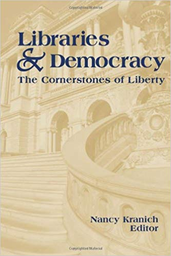
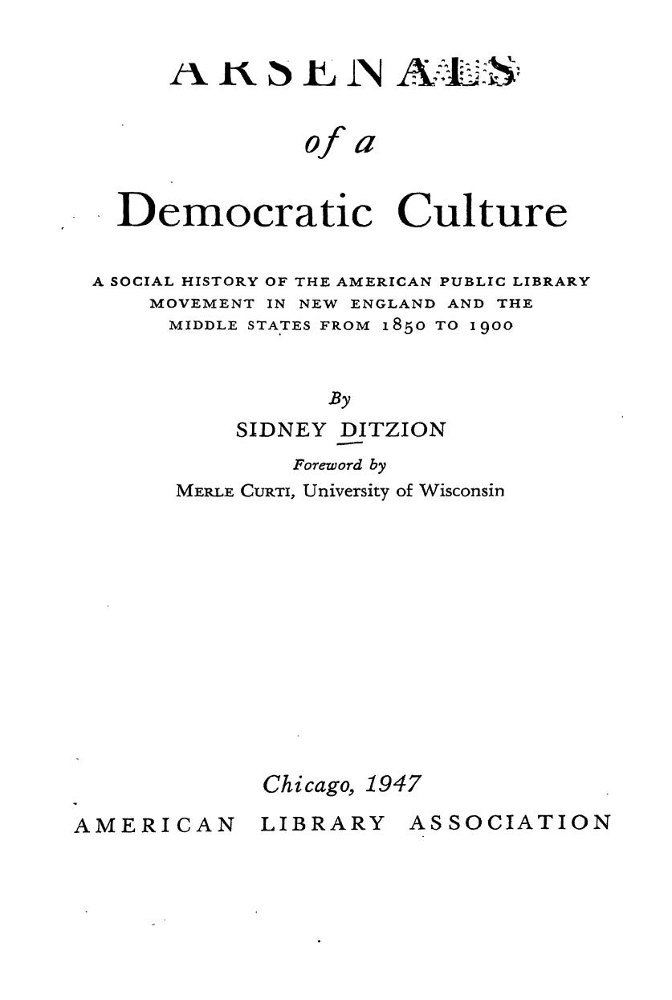
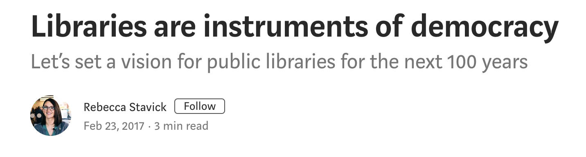
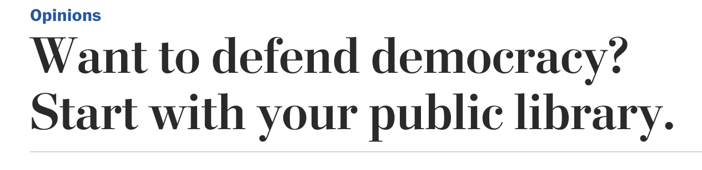
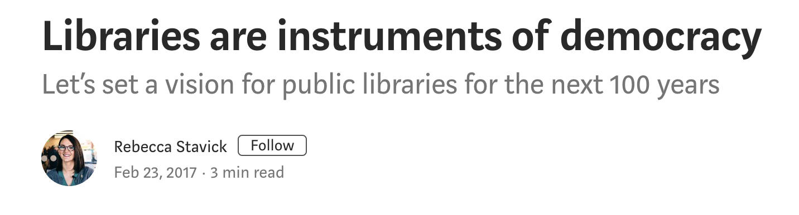
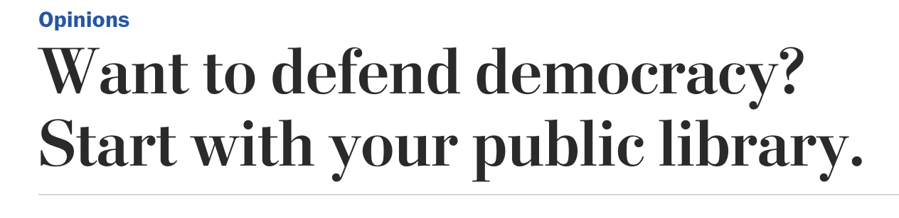

Libraries and Democracy: A Critique
January 31, 2019
Sam Popowich, MA,
MLIS
Discovery and Web Librarian,
University of Alberta
PhD Student, Department of
Political Science and International Studies,
University of
Birmingham
@redlibrarian
Outline
- Conference theme
- Etymology
- The democratic discourse of librarianship
- Who are 'the people'?
- Questions of power
- Locke and liberalism
- Alternatives
- Towards a partisan librarianship
δῆμος + κράτος
people + power
Regime Taxonomy in Aristotle's Politics
| "Correct" | "Deviant" | |
| One Ruler | Monarchy | Tyranny |
| Few Rulers | Aristocracy | Oligarchy |
| Many Rulers | Polity | Democracy |
The Democratic Discourse of Librarianship
  




"Libraries are directly and immediately involved in the conflict which divides our world, and for two reasons; first, because they are essential to the functioning of a democratic society; second, because the contemporary conflict touches the integrity of scholarship, the freedom of the mind, and even the survival of culture, and libraries are the great tools of scholarship, the great repositories of culture, and the great symbols of the freedom of the mind."
F.D. Roosevelt, 1940
"who are the 'people'?"
Boston Public Library, founded 1848.
The concepts of republicanism, risen from the enlightenment, advertised in the Revolution, strengthened in the philosophy of Jeffersonian and practiced in the era of Jacksonian democracy, were by mid-century deeply engraved in the popular mind. The doctrine of human rights, political equality, and residence of authority in the whole people, had become firmly fixed in the professed American credo.
Ditzion, Arsenals of a Democratic Culture, 51-52.
Expansion of the Franchise
The "demos" in Canada
- 1867: Suffrage limited to property-owning men over 21; details varied by province.
- White women gain the vote gradually between 1916 (Manitoba) and 1951 (NWT)
- Asian-Canadians explicitly disenfranchised in 1885; gradually regained the vote between 1920 and 1948.
- Indigenous peoples: various forms of disenfranchisement and manipulation by government up to the beginning of provincial suffrage in 1949 (BC); provincial disenfranchisement lasts until 1969 (Quebec).
- Federal suffrage: extended to non-Status Indigenous people in 1950; status in 1960.
- Inuit disencfranchised in 1934, regained franchise in 1950, but weren't fully enumerated until the 1962 election.
- "Universal" suffrage only entrenched in the Constitution of 1982
Source: The Canadian Encyclopedia
Legal disenfranchisement
Physical disenfranchisement: deportation, internment
Technical disenfranchisment: poll-tax, property-requirement, gerrymandering, ID laws
Where is power located? What kind of power is it?
Private vs. Public, βίος vs. ζωή
Politics or economics?
Political society vs. civil society
Institutions or structures?
John Locke, 1632-1704
Locke's political theory
- Methodological individualism
- Social contract
- Strict division between public and private
- State is meant to guarantee civil (public) rights and not infringe upon private matters
- Natural rights (possessed only by "citizens")
- Liberty (for those who possess natural rights)
- Constitutionalism (to uphold liberty)
Liberal Democracy
Liberty is the idea that there is a sphere of human thought and action that is private and that, within that private sphere, all individuals have the right to make choices for themselves. According to the political theory of liberalism, then, we are free to do whatever we wish provided there is no law prohibiting us from doing so.
Malcolmson, et al.The Canadian Regime, p. 8
Eric Klinenberg, "To Restore Civil Society, Start with the Library", New York Times, Sept 8, 2018.
Despite the fact that the American public library has been strongly identified with the concept of equal educational opportunity, it is difficult to prove that these civic institutions are essential to democracy - the cornerstone of the narrative the profession uses to justify its existence.
Wiegand, Wayne A. Part of our Lives: A People's History of the American Public Library, p. 2.
Can we clarify what has long seemed an intuitive relationship between democracy and libraries, or do we abandon the idea as sentimentality?Buschman, John. "On Democracy and Libraries".
The formal site of politics and political participation—government and the state—has eroded, but democratic politics now exists in multiple social venues. In other words, democracy takes place directly and indirectly in venues not commonly thought of as sites for it but where everyday life is negotiated and played out (e.g., libraries), thereby constructing the culture. Wiegand admirably demonstrates this throughout his recent work, but he discounts its political import.
Buschman, 34.
Alternatives to liberalism?
Alternatives to
democracy?
Two issues:
- Lives
- Time
Two values?
- Liberty
- Equality
What are the consequences?
Neutrality or Ethics
"Politics"... is not and cannot be a strictly value-free enterprise, and so is in the very general sense an "ethical" activity. Politics is a matter of human, and not merely mechanical, interaction between individuals, institutions, or groups. (p. 8)
Every theory is partisan. (p. 29)
Case Studies
- Intellectual Freedom
- Copyright
Source: http://www.michaelgeist.ca/2018/12/bryan-adamscopyrightwarning/
Recap
Thank you. Questions?